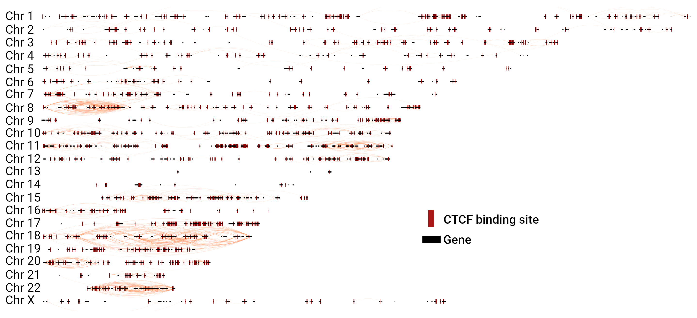

Are network communities bounded by
CTCF binding sites?
We compared the number of CTCF binding sites placed in the
periphery of the intra-chromosomal network clusters and the ones placed inside

Intra-chromosomal links in the top 13,317 interactions